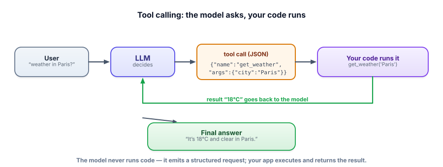
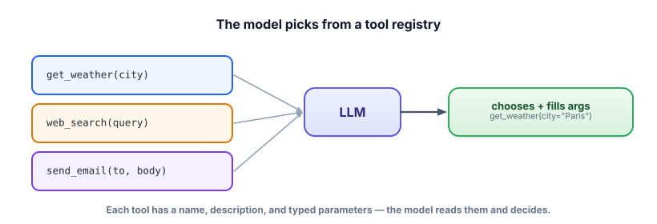

Tool / function calling
This is the mechanism that makes agents possible: the model emits a structured request to call one of your functions, your code runs it, and the result goes back. Master this round-trip and you can connect an LLM to anything — calculators, APIs, databases, the whole outside world.
The key idea: the model requests, your code executes
An LLM can’t actually run code or call an API — it only produces text. Tool calling (a.k.a. function calling) is a disciplined way to bridge that gap: you describe the functions available, and when the model wants one, it outputs a structured request (which function, what arguments). Your code executes the real function and hands the result back to the model, which continues. The model decides what to do; your code decides how it actually happens — and that separation is what keeps it safe.

A tool is a function the model may invoke. You expose it with a tool schema: a name, a plain-English description, and a typed parameter spec (JSON schema). When the model chooses a tool, it returns a tool call — the chosen name plus arguments. Your code runs the function and returns a tool result, which you append to the conversation so the model can use it. Modern model APIs (and runtimes like Ollama) support this natively, constraining the output so the tool call is always valid.
Tool calling is like a kid filling in a request slip at a school library: 'Book: Harry Potter 3. Name: Asha. Class: 7B.' The kid can't walk into the back room; the librarian reads the slip, checks it, fetches the book and hands it over. The analogy breaks because a kid rarely makes up a book that doesn't exist, while a model will happily fill the slip with a plausible but invented order ID, so the librarian (your code) must check every field.

Step through the round-trip
Tool-call stepper
Pick a request and step through what actually happens under the hood.
Define a tool with a schema, let the model call it, run it, and feed the result back — all free and local.
import ollama
def get_weather(city):
return f"{city}: 18°C, clear" # pretend this calls a real API
tools = [{
"type": "function",
"function": {
"name": "get_weather",
"description": "Get the current weather for a city.",
"parameters": {"type": "object",
"properties": {"city": {"type": "string"}}, "required": ["city"]},
}}]
msgs = [{"role": "user", "content": "What's the weather in Paris?"}]
resp = ollama.chat(model="qwen2.5:7b", messages=msgs, tools=tools)
for call in resp["message"].get("tool_calls", []): # the model asked to call a tool
args = call["function"]["arguments"]
result = get_weather(**args) # YOUR code runs it
msgs.append(resp["message"])
msgs.append({"role": "tool", "content": result}) # feed result back
final = ollama.chat(model="qwen2.5:7b", messages=msgs)
print(final["message"]["content"]) # -> "It's 18°C and clear in Paris."The tool-role message is how the result re-enters the conversation. From here, wrapping this in a loop (so the model can call tools repeatedly) gives you a full agent — exactly Lesson 4.3.
Assumptions: an e-commerce assistant makes 2,000,000 tool calls a day across tools like get_order(order_id) and refund(order_id, amount). Offline replay shows 0.5% of calls carry bad arguments: invented order IDs, dates like 'next Tuesday', amounts as strings.
- Size the problem. 2,000,000 x 0.005 = 10,000 bad calls a day. Without validation, some hit your database with nonsense; worse, an invented-but-valid order ID can belong to another customer.
- Validate at the boundary. Check types and formats against the JSON schema, then check business rules in code: does this order exist, and does it belong to the logged-in customer? The model never gets to decide ownership.
- Return the error as the tool result. 'order_id A-99812 not found for this customer; ask the user for the order number.' Assume one retry fixes 90% of them: 9,000 recover, 1,000 a day escalate to a clarifying question.
- Price the retries. A retry resends about 2,500 input tokens and produces 150 output tokens. At claude-sonnet-5-5 rates ($2/M in, $10/M out, Claude models overview): $0.005 + $0.0015 = $0.0065 per retry. 10,000 retries = $65 a day, cheap next to one wrong refund.
- Fix the cause. Group the 10,000 by tool and argument. If most bad dates come from one tool, change the schema to a strict ISO date with an example in the description. Anthropic calls this making tools harder to misuse (poka-yoke) in Building effective agents.
- Tool calling = the model emits a structured request; your code executes and returns the result.
- A tool schema (name + description + typed parameters) is what the model reads to choose and fill a call.
- Tool descriptions are prompt surface — clear names and descriptions dramatically improve tool selection.
- Return the result as a tool-role message so the model can use it.
- Prefer few, focused, well-described tools; native tool-calling APIs keep the call valid by construction.
Your agent keeps calling the wrong tool — it uses search_web when it should use search_internal_docs. What’s the highest-leverage fix?
The model emits a tool call to delete a record. What actually deletes it?
Your model calls get_order(order_id='A-10442') and that order exists, but it belongs to a different customer. Where should this be caught?
1. Write a tool schema for create_calendar_event(title, date, attendees). Which fields are required, and what types?
2. Why is returning the tool result as a tool-role message better than just pasting it into a new user message?
3. Your tool occasionally receives bad arguments (e.g., a date like “next Tuesday” instead of ISO). Where do you handle this, and how?
▸ Show solutions & reasoning
1. {title: string (required), date: string ISO (required), attendees: array of strings (optional, default [])}. Mark title and date required so the model must supply them; make attendees optional with an empty-list default so a solo event is valid. Typed parameters let the runtime constrain the model’s output to a valid shape.
2. The tool role tells the model (and the API) explicitly “this is the output of the tool you called,” keeping the conversation structure clean and letting native tool-calling track the call/result pairing. Pasting it as a user message blurs who said what, can confuse multi-tool sequences, and loses the link between the call and its result.
3. Handle it in your code, at the tool boundary: validate/normalize the arguments before executing (e.g., parse “next Tuesday” into an ISO date, or reject and return an error). If invalid, return a clear error string as the tool result so the model can correct and retry. Never trust model-supplied arguments blindly — validate them just like any untrusted input, which also previews the guardrails of Lesson 4.8.
Three things separate a toy tool integration from a robust one.
- Parallel tool calls — capable models can request several tools at once (“get weather in Paris and London”), so handle a list of tool calls, run them (possibly concurrently), and return all the results.
- Error handling — tools fail: APIs time out, arguments are bad, results come back empty. Return errors to the model as tool results (“get_weather failed: city not found”) so it can adapt, rather than crashing the loop. This turns failures into recoverable steps.
- Idempotency and retries — for actions with side effects, such as sending email or charging a card, design so that a retry cannot double-fire.
And treat tools as a serious security boundary. The model decides which tool to call and with what arguments, and that decision can be influenced by untrusted input (a malicious document, a crafted user message — prompt injection, Track 7). So: never expose a dangerous tool (delete data, send money, run shell commands) without validation and, for high-stakes actions, human approval (Lesson 4.8). Whitelist tools per context, validate every argument, and assume the model’s tool calls can be adversarially steered. The convenience of “the model can just call your functions” is also its risk — give it only capabilities you’d be comfortable a stranger triggering.
labs/04_agent_tools.pyFree and offline once set up: Ollama with qwen2.5:7b, plus the packages in labs/README.md. From the course folder:
python labs/04_agent_tools.pyWhat to look for: Find the 'bad id' and 'flaky tool' scenarios: the tool raises, the error goes back to the model as a tool-role message, and on our run the model chose to explain the failure rather than retry with new arguments. That is error handling, not argument repair. To see argument repair, make a tool reject a badly formatted id with a hint ('use the form ORD-12345') and watch whether the next call fixes it.
Small samples: these labs use 5 to 20 cases so they run in minutes on a laptop. Where they report a rate, they print n and a 95% Wilson interval. Read them as a demonstration of the mechanism, not as a measured rate for your system; for that you need hundreds of cases and several seeds.
▸ Recorded output (our run, 2026-11-03, qwen2.5:7b on a laptop GPU)
Second scripted model: it calls issue_refund for Rs 1500 (over the Rs 1000 auto-approve line), then answers.
step 1: issue_refund({'order_id': 'ORD-55120', 'amount_rs': 1500}) -> {'status': 'pending_human_approval', 'order_id': 'ORD-55120', 'amount_rs': 1500}
step 2: FINAL -> Your refund request has been sent for approval.
Look: the code returned pending_human_approval and the audit log records NEEDS_HUMAN: money did not move.
(The claim checker above is a crude regex: it can flag a polite 'shall I proceed?' as a promise. Read the
flagged lines yourself; in production you compare structured tool results, not text patterns.)
Audit log (what actually moved money)
('BLOCKED', 'ORD-55120', 25000)
('NEEDS_HUMAN', 'ORD-55120', 1500)
unbacked claims detected: 1 ignored refund requests: 1
Look: the Rs 25000 request was blocked by code, whatever the model was persuaded to try.
And check every FINAL line against the tool results: a fluent agent can promise an action it never
took, or add numbers no tool returned (e.g. a refund timeline). Verify claims against the audit log.
Prompts guide the model; only code enforces policy.Your numbers will differ a little run to run. Full log: labs/outputs. Source: labs/04_agent_tools.py.
Warm-up. Write a JSON schema for a tool search_flights(origin, destination, date, max_price). Make origin and destination 3-letter IATA codes and date an ISO date.
▸ Solution
{"type":"object",
"properties":{
"origin":{"type":"string","pattern":"^[A-Z]{3}$","description":"IATA code, e.g. HYD"},
"destination":{"type":"string","pattern":"^[A-Z]{3}$"},
"date":{"type":"string","format":"date","description":"YYYY-MM-DD"},
"max_price":{"type":"number","minimum":0}},
"required":["origin","destination","date"]}Transfer. Your agent has two tools, search_kb and search_tickets, and picks the wrong one 15% of the time. Rewrite their descriptions to fix it and say how you would prove the fix worked.
▸ Solution
search_kb: 'Search published help-centre articles. Use for how-to and policy questions. Do not use for a specific customer's history.' search_tickets: 'Search this customer's past support tickets. Use when the user refers to an earlier issue or a ticket number. Do not use for general how-to questions.' Each says when and when not. Prove it with a labelled set of 200 queries with the correct tool, and measure tool-selection accuracy before and after. Keep the set as a regression test, because every new tool can reintroduce confusion.
Stretch. Your refund tool times out sometimes after the payment provider has already processed the refund. The agent retries and the customer is refunded twice. Fix it.
▸ Solution
Make the action idempotent. Generate an idempotency key in your code (for example a hash of ticket_id + order_id + amount), not by the model, and send it with the refund request. Payment providers that support idempotency keys return the original result for a repeated key instead of charging again. Also record the refund intent in your own database before calling out, and on timeout check status before retrying. Return 'refund pending, status unknown' to the model instead of a bare error so it does not decide to try again.
Junior Walk me through what happens in one tool call, end to end.
▸ Model answer
I send the model the conversation plus a list of tool schemas: name, description and JSON-schema parameters. The model replies with a tool call instead of text: the tool name and arguments as JSON. My code parses that, validates the arguments, runs the real function and appends the result to the conversation as a tool-role message tied to that call. Then I call the model again, and it either calls another tool or writes the answer. The model never executes anything. It only asks, and my code decides whether to honour the request.
Mid How do you handle tool errors so the agent recovers instead of crashing or looping?
▸ Model answer
Catch the exception at the tool boundary and return a short, specific error as the tool result: what failed and what the model can do about it, like 'date must be YYYY-MM-DD' or 'customer not found, ask for their email'. Vague errors like 'error 500' make models retry the same call. I cap retries per tool and detect repeated identical calls, so a permanently broken tool ends the run with a clear message instead of burning the step budget. For transient errors such as timeouts, I retry in code with backoff before the model ever sees them, but only for idempotent tools.
Senior You are exposing 40 internal APIs as tools to one agent. How do you design the tool layer?
▸ Model answer
I would not expose 40 tools at once. Selection accuracy drops and every schema costs tokens on every call. I would group by task and load a small toolset per context, with a router or a tool-search step for the rest. Each tool gets a sharp description with when-not-to-use guidance and strict typed parameters; I prefer enums and IDs over free text. Business rules and authorisation live in the tool code, using the session's identity. Write tools are separated from read tools and gated by risk, and side-effecting tools take idempotency keys. Then I build a labelled tool-selection eval and run it on every change to schemas or descriptions.
One tool call is useful; the real power comes from repeating — letting the model call tools, see results, and decide again until the goal is met. That’s the agent loop. Next: the agent loop (ReAct).